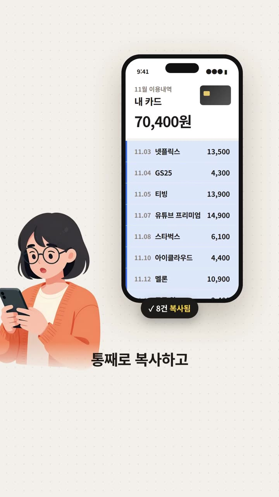
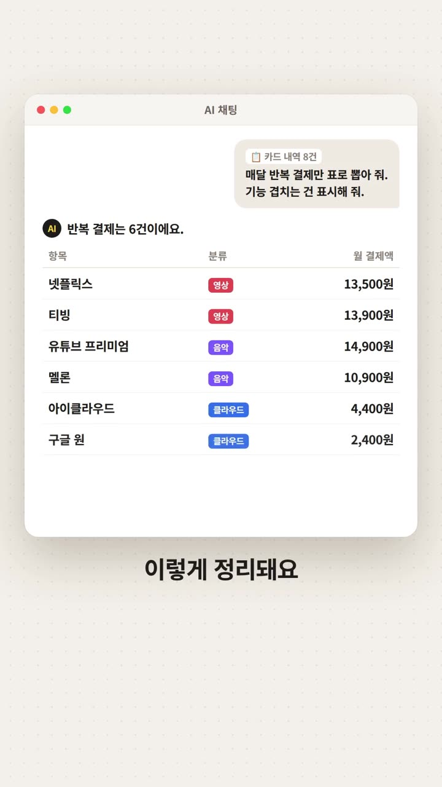
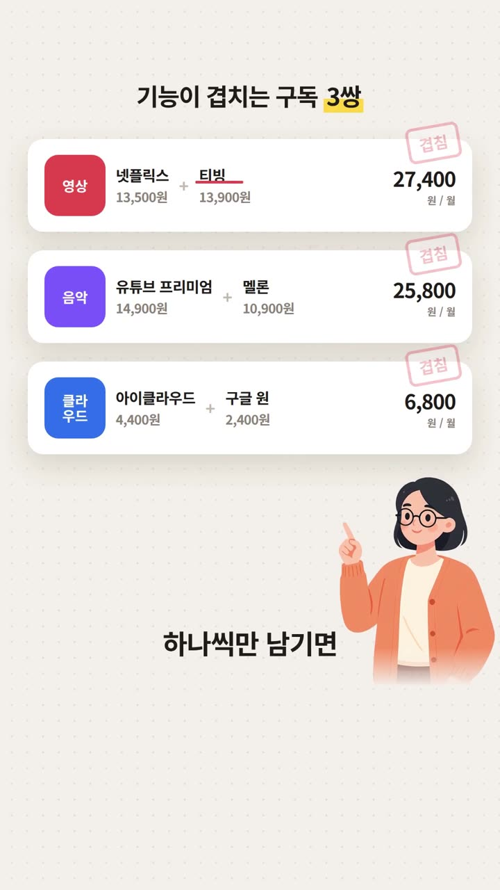

@jungle.gcc릴스 자료 · 2026.11.13
매달 새는 구독료,
30초 만에 찾기
카드 앱 이번 달 내역을 통째로 붙여 넣고 한 줄만 쓰면, 반복 결제만 표로 뽑고 기능이 겹치는 구독까지 표시해 줘요.
따라 하기
카드 앱에서 이번 달 이용내역 화면을 열고 전체 선택 → 복사해요. (PC 웹 카드 내역도 같아요)
ChatGPT 새 채팅에 그대로 붙여 넣어요.
아래 프롬프트 ①을 이어서 붙여 넣고 보내요. 몇 초 만에 표가 나와요.



복사해서 쓰는 프롬프트
① 반복 결제만 표로위 카드 내역에서 매달 반복되는 결제만 골라 표로 정리해 줘. 열은 항목·월 결제액·분류(영상/음악/클라우드/기타)로 하고, 마지막에 월 합계를 적어 줘. 한 번만 결제된 건 따로 빼서 알려 줘.
② 겹치는 구독 찾기표에서 기능이 겹치는 구독을 묶어 줘. 묶음마다 둘 중 하나만 남긴다면 무엇을 남기는 게 좋을지 이유 한 줄과 함께 알려 줘.
③ 아끼는 금액 계산겹치는 묶음에서 하나씩만 남기면 한 달·1년에 각각 얼마를 아끼는지 계산해 줘.
④ 해지 알림 일정각 구독의 다음 결제일을 내역 날짜 기준으로 추정해서, 해지할 항목은 결제 3일 전에 알 수 있게 날짜 목록으로 만들어 줘.
⑤ 3개월 비교지난 3개월 내역을 차례로 붙여 넣을게. 달마다 새로 생긴 정기결제와 금액이 오른 결제를 표로 비교해 줘.
알아 두면 좋은 점
카드 번호·이름 같은 개인정보는 붙여 넣기 전에 지워 주세요. 가맹점 이름과 금액만 있으면 충분해요.
유튜브 프리미엄은 유튜브 뮤직이 포함돼서, 음악 앱과 겹치는 경우가 많아요.
Claude·Gemini에 같은 프롬프트를 써도 비슷하게 동작해요.
다음 꿀팁 받기 · @jungle.gcc 팔로우← 자료실 전체 보기
영상 속 금액은 예시예요.